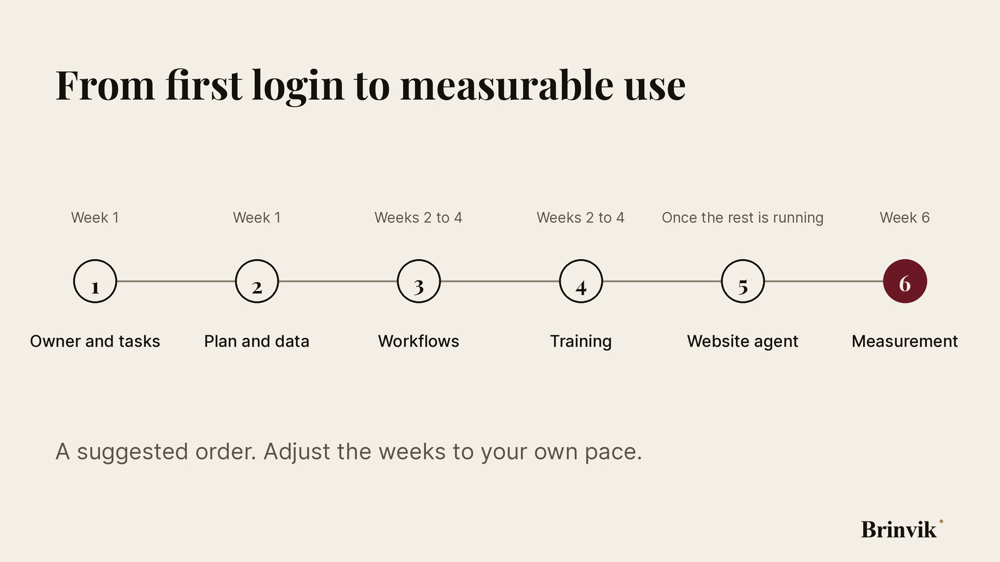
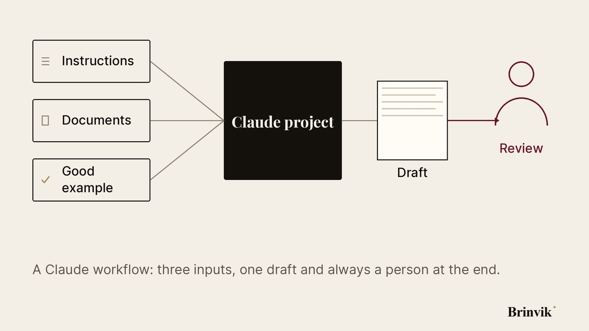
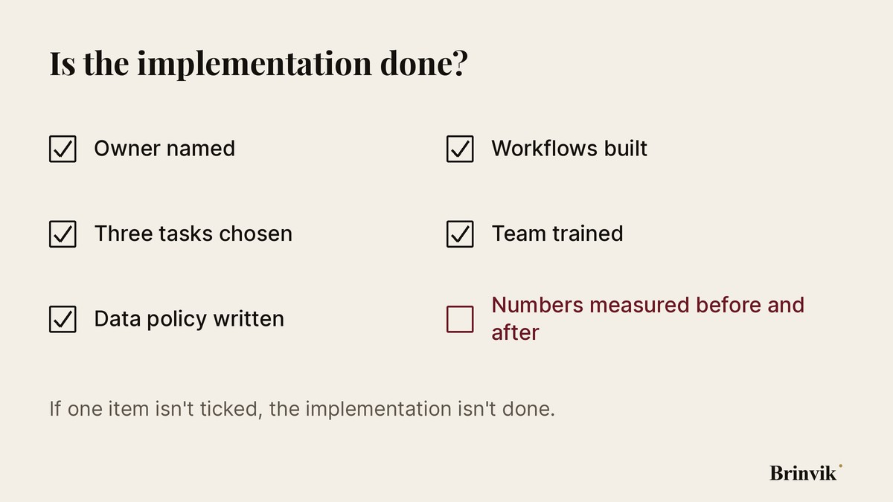

Claude implementation for companies: an open playbook
Most companies start with Claude the same way. Someone opens an account, a few colleagues try it, and three months later nobody knows whether it's made a difference. This playbook is the six steps that turn a trial into everyday use. It's written for companies of 5 to 80 people and is free to use and share.
What is an AI implementation, and why does it stall?
An AI implementation is the work that makes a model a regular part of the working week: choosing the tool, setting data rules, setup, training and follow-up. It stalls when it's treated as a purchase rather than a change in how people work.
Three things usually go wrong. Nobody owns it, so it drifts. Nobody chose which tasks Claude should handle, so everyone tries a bit of everything. And nobody measured anything first, so nobody can show the effect afterwards.
Step 1: Who owns it, and which tasks come first?
Name one person who owns the result. Not a committee. Then pick three tasks that take a lot of time, repeat every week, and where a wrong answer is caught before it does harm. Good candidates are meeting notes, first drafts of proposals, summaries of customer enquiries and CRM clean-up.
Poor first candidates are tasks where a mistake goes straight to a customer with no check, or where nobody can say what a good result looks like.
Step 2: Which Claude plan, and how do you keep data safe?
Choose a business plan, not personal accounts. Claude Team gives you shared admin, single sign-on (SSO) and a data processing agreement. Enterprise comes in when you need automated user provisioning (SCIM), audit logs or specific contract terms.
Write a one-page data policy before anyone starts. It answers three questions:
- Which data may be shared with Claude, for example internal notes and public material?
- Which data must never be shared, for example national ID numbers, health data and customer data without a lawful basis?
- Who do people ask when they're unsure?
It's the kind of document an auditor asks for in an ISO 27001 audit, and that a data protection authority can ask to see. It also supports the AI literacy requirement in the EU AI Act, which has applied since February 2025. And at one page, people actually read it.
Step 3: How do you set Claude up for the first workflows?
Build each workflow as a small tool with its own name. In Claude that means a project with fixed instructions, the documents the task needs, and one example of a good result. A meeting notes project knows what your notes look like. A proposal project knows your prices and terms.

When a workflow needs data from the CRM, email or calendar, Claude uses connectors. On Team and Enterprise, an admin with the Owner role turns them on, and can limit a connector to reading only. Start with read access. Allow writing only after the workflow has run cleanly for a few weeks.
Step 4: How do employees learn to use Claude every day?
Training works when it happens on people's own tasks. A workshop with generic examples is forgotten by Friday. A workshop where each person leaves with their own finished workflow is in use on Monday.
Three habits matter most: give Claude the context instead of hoping it guesses, ask for a draft rather than a final answer, and always read the result before passing it on.
Step 5: When does a Claude agent on your website make sense?
A website agent is the next step once the internal workflows are running. It answers visitors, asks the questions a salesperson would ask, and books the right meetings straight into the calendar. It should be honest about who it can't help, and refer them on rather than push them into a meeting.
Don't build it until you know what a good customer looks like. An agent amplifies how you qualify leads. If your criteria are vague, so is the agent.
Step 6: How do you measure whether it works?
Measure three numbers before you start and again in week 6: how long each of the three tasks takes, how many errors review catches, and how many people use the workflow each week. If use drops after three weeks, the workflow is probably too awkward. Fix it before you build the next one.

Do it yourself, or get help?
Many teams get a long way on their own with this playbook. Don't have the time to own it internally, or want the workflows built and tested on your own data? Brinvik offers a Claude implementation for teams, with a fixed scope and public prices.
Frequently asked questions
How long does a Claude implementation take?
Setup and training take a few days. What takes time is picking the right tasks and testing them on real data. Measure the effect in week 6, so you have numbers to base a decision on.
Can you use Claude under GDPR?
Yes, if it's set up properly, but the responsibility stays with you as data controller. Use a business plan, where Anthropic's data processing agreement is part of the commercial terms. On business plans, Anthropic doesn't use your data to train its models by default. Feedback a user gives with thumbs up or down can be used, though, and an admin with the Owner role can switch that option off. Decide in writing which data may be shared, and remove personal data the task doesn't need.
Which Claude plan should a company choose?
For a team, Claude Team is the natural start. It has shared admin, single sign-on (SSO) and a data processing agreement. Enterprise makes sense when you need automated user provisioning (SCIM), audit logs or specific contract terms. Free and personal plans don't belong in company operations.
How do you measure whether it works?
Measure how long the task takes before and after, how many errors review catches, and how many people on the team use the workflow each week. Take the numbers before you start, or there's nothing to compare with.
Sources
- Anthropic: What is the Team plan?
- Anthropic: What is the Enterprise plan?
- Anthropic: The Data Processing Addendum (DPA)
- Anthropic: Is my data used for model training?
- Anthropic: What are projects?
- Anthropic: Use connectors
- EU AI Act, Regulation (EU) 2024/1689
- Amendment to the AI Act, Regulation (EU) 2026/1744 (new Article 4 on AI literacy)